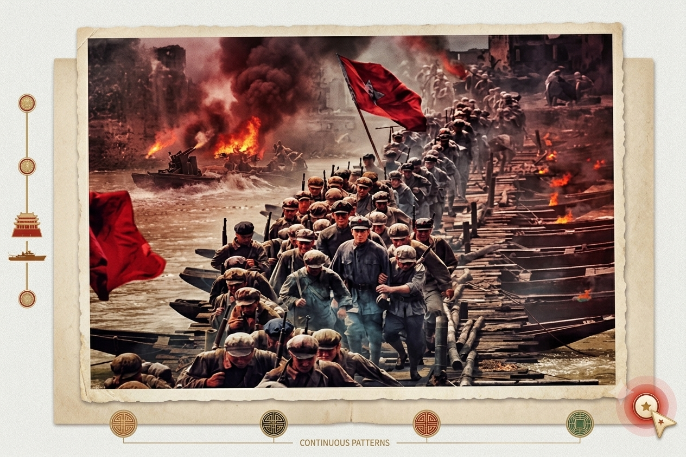

中央红军长征史料 · 湘江突破
湘江战役，是中央红军长征出发以来最壮烈的一战。红军将士在桂北湘江畔与数倍于己的敌军展开了惨绝人寰的血战，连续突破国民党军设置的第四道封锁线。
"三年不饮湘江水，十年不食湘江鱼"在这场被公认为"血肉绞肉机"的战役中，中央红军由出发时的8.6万人锐减至3万余人。无数年轻的红军战士将热血与生命永远留在了冰冷的湘江之底，用血肉之躯为中国革命保全了火种。
江水一直在排山倒海地响，天上飞机的轰炸声震得耳膜发烂。排长拉着我的领子把我按在浮桥的木板上，子弹贴着脑门嗖嗖地飞，打在水里溅起半米高的水花。我睁开眼，身边的浮桥木板已经被血水泡得发黑、打滑。
"往前冲！别回头！"排长的大嗓门瞬间被一声巨大的爆炸吞了进去。我眼睁睁看着走在前面的一个老班长被气浪掀进了湘江，连个水泡都没冒出来。江面上全是漂着的军帽，还有被炸断的浮桥木屑。
我的两条腿抖得不听使唤，手里死死攥着那杆比我还高的步枪。每往前挪一步，脚底下的木板就在剧烈晃动。这不是在过河，我们是在肉打的绞肉机里生生往前抠出一条活路啊……
湘江战役，是中央红军长征出发以来最壮烈的一战。红军将士在桂北湘江畔与数倍于己的敌军展开了惨绝人寰的血战，连续突破国民党军设置的第四道封锁线。
"三年不饮湘江水，十年不食湘江鱼"在这场被公认为"血肉绞肉机"的战役中，中央红军由出发时的8.6万人锐减至3万余人。无数年轻的红军战士将热血与生命永远留在了冰冷的湘江之底，用血肉之躯为中国革命保全了火种。
